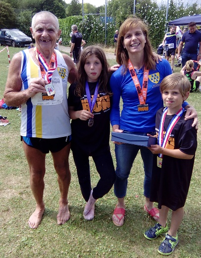

Jim and Heather Fitzmaurice both became British Masters 30k champions at the North Downs Run on 25 June, with Jim taking M75 gold and Heather W45 gold. They were among ten Sevenoaks AC runners who contested the hilly off-road event of whom Dan Witt was first SAC runner home with Keith Brown close behind.
The SAC results were:
| Pos- ition | Bib- No. | Finish Time | Chip Time | Name | Gen- der | Cat- egory | Club or Team | Rank |
|---|---|---|---|---|---|---|---|---|
| 46 | 378 | 02:28:26 | 02:28:22 | DANIEL WITT | M | M40 | Sevenoaks AC | 1 |
| 49 | 294 | 02:28:52 | 02:28:47 | KEITH BROWN | M | M40 | Sevenoaks AC | 2 |
| 73 | 342 | 02:36:53 | 02:36:48 | JOHN STEVENS | M | M50 | Sevenoaks AC | 3 |
| 123 | 478 | 02:49:04 | 02:48:56 | HEATHER FITZMAURICE | F | W45 | Sevenoaks AC | 4 |
| 216 | 114 | 03:09:11 | 03:08:56 | ERIK FOLKESSON | M | M50 | Sevenoaks AC | 5 |
| 299 | 180 | 03:27:49 | 03:27:34 | MIKE ALLEN | M | M50 | Sevenoaks AC | 6 |
| 300 | 179 | 03:27:50 | 03:27:35 | CLAIR THORNTON | F | W35 | Sevenoaks AC | 7 |
| 311 | 259 | 03:29:42 | 03:29:26 | JENNY AUSTIN | F | W35 | Sevenoaks AC | 8 |
| 319 | 13 | 03:32:48 | 03:32:40 | JAMES FITZMAURICE | M | M70 | Sevenoaks AC | 9 |
| 447 | 521 | 04:22:48 | 04:22:21 | SYLVIA LEWIS | F | W55 | Sevenoaks AC | 10 |
The full results are here.